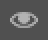
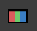
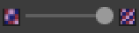
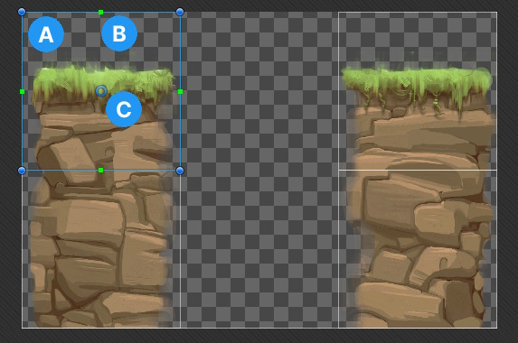

Explore the properties you use to configure the geometry that Unity uses to detect if a spriteA 2D graphic objects. If you are used to working in 3D, Sprites are essentially just standard textures but there are special techniques for combining and managing sprite textures for efficiency and convenience during development. More info
See in Glossary collides with another sprite. For more information, refer to Create collision shapes for a sprite.
The following properties appear in all the different tabs of the Sprite Editor window.
| Property | Icon | Description |
|---|---|---|
| Window name | N/A | Sets the tab to display in the Sprite Editor window. The options are:
|
| Preview |  |
Previews your changes in the SceneA Scene contains the environments and menus of your game. Think of each unique Scene file as a unique level. In each Scene, you place your environments, obstacles, and decorations, essentially designing and building your game in pieces. More info See in Glossary view. |
| Revert | N/A | Discards your changes. |
| Apply | N/A | Saves your changes. |
| Color |  |
Toggles between displaying the color channels of the texture and its alpha channel. |
| Zoom | N/A | Sets the zoom level at which to display the texture. |
| Mipmap level |  |
Sets the mipmap level of the texture to display. The slider ranges from the lowest resolution mipmap level on the left to the highest resolution mipmap level on the right. This property is available only if the texture has mipmap levels. |
The main area of the Sprite Editor window displays the texture. Each individual sprite in the texture displays as a white outline, also known as a SpriteRect.
Left-click a sprite to select it.

Unity displays the following:
Select a sprite to display the collisionA collision occurs when the physics engine detects that the colliders of two GameObjects make contact or overlap, when at least one has a Rigidbody component and is in motion. More info
See in Glossary geometry in white. Each square point is a vertex of a collision shape.
To edit a collision shape, do the following:
For more information, refer to Create collision shapes for a sprite.
| Property | Sub-property | Description |
|---|---|---|
| Outline Detail | N/A | Sets how detailed the outline of the collision geometry is. A higher value creates a more detailed outline that follows the shape of the sprite more closely, but also increases the number of vertices in the geometry, which can affect performance. |
| Alpha Tolerance | N/A | Sets the minimum alpha value for Unity to consider a pixelThe smallest unit in a computer image. Pixel size depends on your screen resolution. Pixel lighting is calculated at every screen pixel. More info See in Glossary of the sprite as opaque. For example, if you set Alpha Tolerance to 128, Unity considers pixels with an alpha value of below 128 transparent. |
| Snap | N/A | Snaps the vertices to the nearest pixel. |
| Generate | N/A | Generates the collision geometry. To save the geometry, select Apply in the toolbarA row of buttons and basic controls at the top of the Unity Editor that allows you to interact with the Editor in various ways (e.g. scaling, translation). More info See in Glossary. |
| Generate All | N/A | Generates collision geometry for all the sprites in the texture that don’t already have collision geometry. This button is available only if you don’t select a sprite. |
| Force Generate All | N/A | Generates collision geometry for all the sprites in the texture, even if they already have collision geometry. This button is available only if you don’t select a sprite, and you select the checkbox next to Generate All. |
| Copy | N/A | Stores the current geometry. Unity removes the copy from the clipboard if you close the Sprite Editor window or select a different tab. |
| Paste | N/A | Retrieves the geometry you stored. To paste to a different sprite, select the destination sprite in the Project window first. If the position of a vertex is outside the sprite frame, Unity clamps the vertex position to inside the frame. This button is only available if you select Copy first. |
| Paste All | N/A | Retrieves the geometry you stored and applies it to all the sprites in the texture, regardless of which sprites are selected. If the position of a vertex is outside the area of a sprite, Unity clamps the vertex position to inside the area. This button is only available if you select Copy first. |
| From Custom Outline | N/A | Copies the shape from the Custom Outline tab. |
| N/A | Paste | Copies the shape from the Custom Outline tab to this sprite. |
| N/A | Paste All | Copies the shape from the Custom Outline tab to all the sprites in the texture, regardless of which sprites are selected. |